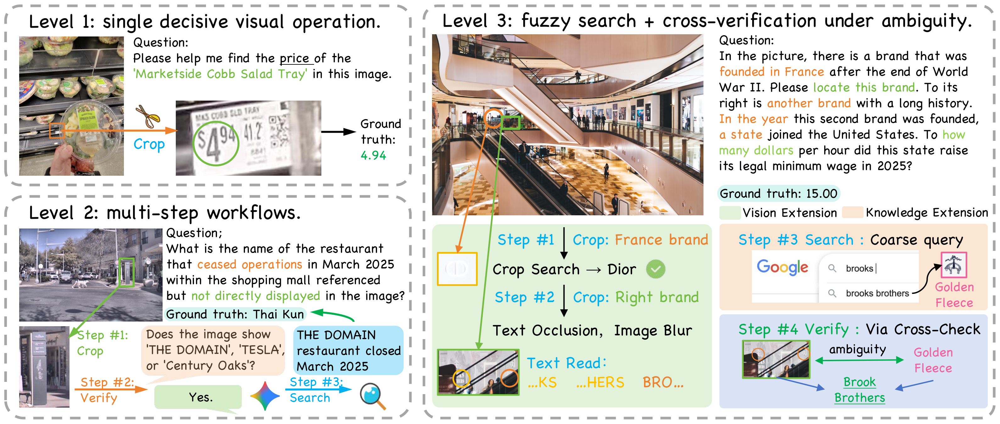
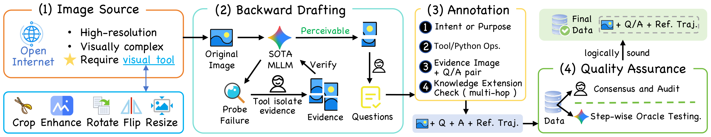
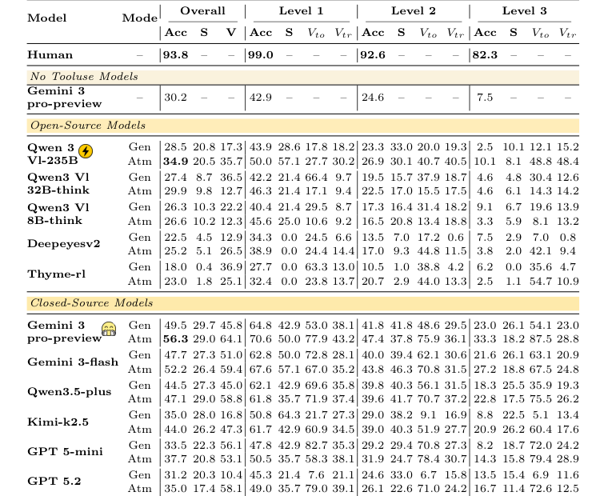
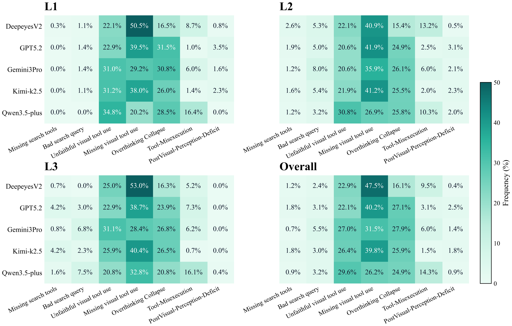
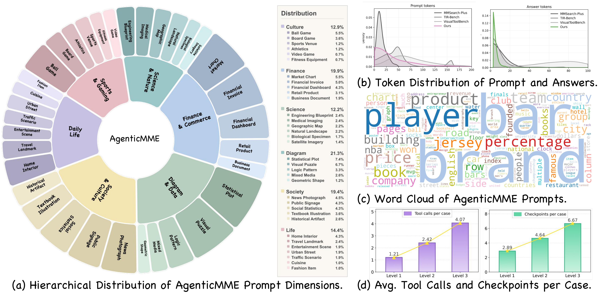

Overview
Multimodal LLMs are shifting from passive observers to active investigators. Agentic-MME evaluates whether they can manipulate visual evidence and retrieve external knowledge in a coherent, efficient workflow.

Benchmark Design
Tasks are organized by interaction complexity, from single-step visual operations to tightly interleaved visual-search reasoning.
Visual Expansion Focus
Single decisive visual action (crop/rotate/enhance) to recover target evidence.
Visual + Knowledge
Short multi-step workflows combining image operations and web retrieval.
Synergistic Coupling
Iterative hypothesis-verification loops requiring interleaved visual and search reasoning.
S-axis: Knowledge Expansion
Audits search strategy, retrieval quality, and correctness of intermediate answers via checkpointed trajectory matching.
V-axis: Visual Expansion
Audits tool invocation correctness and whether generated visual artifacts genuinely expose required evidence.

Main Results
State-of-the-art models still struggle on long-horizon multimodal agentic reasoning, especially in Level-3 tasks.

- Best overall: Gemini 3-pro reaches 56.3% accuracy.
- Hard split drop: performance falls to 33.3% on Level-3.
- Observation: broad knowledge does not imply reliable planning + execution.
- Diagnostic value: process-level auditing pinpoints failure sources hidden by final-answer-only metrics.

Dataset and Annotation
Agentic-MME emphasizes human-supervised process labels to support robust and explainable benchmark diagnostics.
Task Scope
418 real-world tasks across six domains with progressive interaction complexity.
Process Labels
2000+ stepwise checkpoints with human reference trajectories and expected intermediate states.
Human Effort
On average 10+ person-hours of annotation and verification per task.

Citation
@misc{agenticmme2026,
title = {Agentic-MME: What Agentic Capability Really Brings to Multimodal Intelligence?},
author = {Qianshan Wei, Yishan Yang, Siyi Wang, Jinglin Chen, Binyu Wang, Jiaming Wang, Shuang Chen, Zechen Li, Yang Shi, Yuqi Tang, Weining Wang, Yi Yu, Chaoyou Fu, Qi Li, Yi-Fan Zhang},
year = {2026},
note = {Process-verified benchmark for multimodal agentic capability}
}